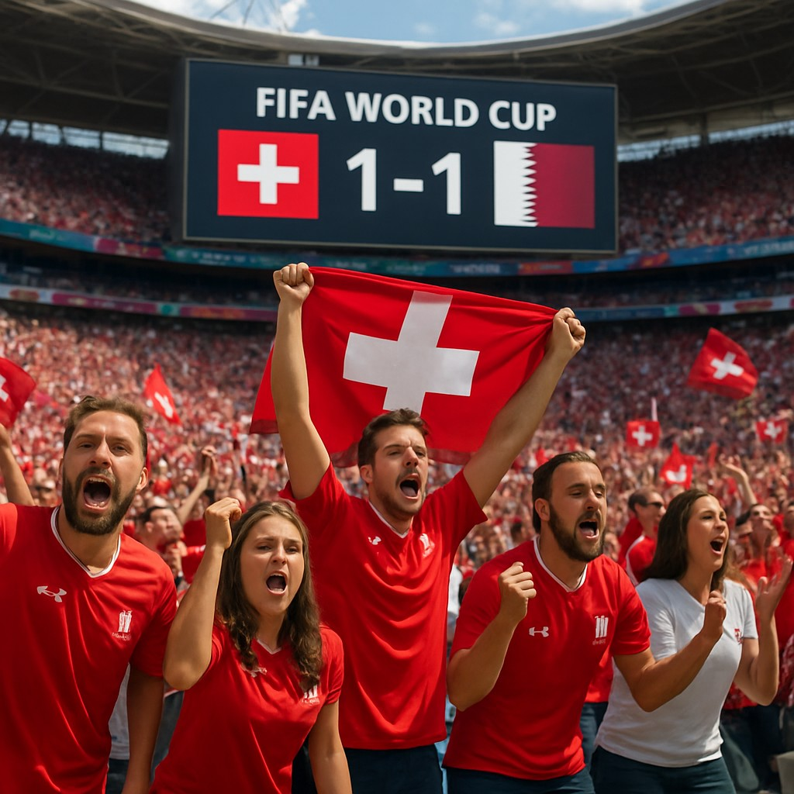

In a tightly contested encounter at the 2026 FIFA World Cup, Switzerland and Qatar battled to a 1-1 draw on Saturday, June 13th, 2026. The game, played at a neutral venue, saw both teams trade chances but ultimately settle for a share of the spoils.
Match Summary
Switzerland entered the match as favorites, with pre-game odds from Sports Select showing Qatar at +1000 and Switzerland at -667. Despite the significant odds favoring the Swiss side, the match proved to be a tactical chess match rather than a dominant display by either team.
Qatar managed to open the scoring early in the first half, capitalizing on a defensive lapse to find the back of the net. However, Switzerland responded with a well-taken equalizer just before halftime, showcasing their resilience and tactical discipline.
Tactical Notes
The match highlighted the importance of defensive organization and counter-attacking efficiency. Both teams had opportunities to secure victory, but neither could break the deadlock in the second half. The draw keeps both teams in contention within their group, though the outcome underscores the competitive nature of the early group-stage fixtures.
Betting Context
The odds reflected a perceived imbalance in quality, with Qatar considered a massive underdog at +1000. The result, while unexpected for many bettors, aligns with the unpredictable nature of World Cup football. The over/under line of 2.5 goals was not reached, finishing at exactly 2 goals, which may have influenced some betting strategies.
What’s Next?
With the draw, both Switzerland and Qatar now sit in the middle of their group standings. The next fixtures will be crucial for both sides as they look to secure a place in the knockout stages. With the tournament still in its early phases, every point matters, and teams will need to balance defense with attacking intent in their upcoming matches.